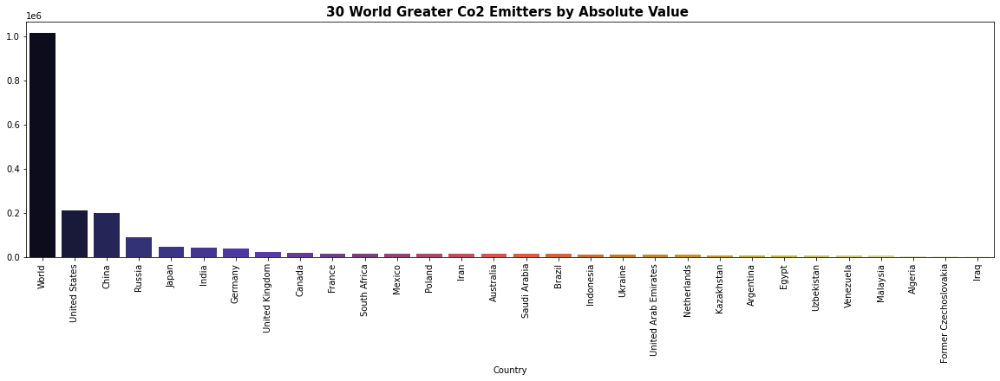

CO2 EDA (Exploratory Data Analysis)
dataset cleanning, manipulation and getting insights about it
Here you could find the process we followed for cleaning the data and the feature engineering made of it. More specifically, we treat the missing values, outliers, watch relationships between the features and take decisions about, it with the aim of use this dataset for a next machine learning project.
About the Dataset
The dataset contains features regarding to energy production and co2 emissions from the countries in the world, ranging a period of time that goes through 1989 up to 2020. We can encounter features as the following:- Country - Country in question
- Energy_type - Type of energy source
- Year - Year the data was recorded
- Energy_consumption - Amount of Consumption for the specific energy source, measured (quad Btu)
- Energy_production - Amount of Production for the specific energy source, measured (quad Btu)
- GDP - Countries GDP at purchasing power parities, measured (Billion 2015$ PPP)
- Population - Population of specific Country, measured (Mperson)
- Energyintensityper_capita - Energy intensity is a measure of the energy inefficiency of an economy. It is calculated as units of energy per unit of capita (capita = individual person), measured (MMBtu/person)
- Energyintensityby_GDP- Energy intensity is a measure of the energy inefficiency of an economy. It is calculated as units of energy per unit of GDP, measred (1000 Btu/2015$ GDP PPP)
- CO2_emission - The amount of C02 emitted, measured (MMtonnes CO2)
Checking the data
Head,Tail and Sample
We encounter that we have features with very different scales and that we have nulls. Also we see that the energy_type variable is a string, Year is an integer variable and should be parsed. The dataset also have an Unnamed: 0 column that is not worthy and should be removed as well as Country is also a string variable, being the rest numeric ones.Info
If we check the info we can realize about the beforehand information and we can know exactly how many nulls there are in every single feature, we see this in the picture below: folowing with the description of our dataset, we first drop the Unnamed column, and then we check the describe of the features: First of all we can see that having year as an integer does not make any sense so we are changing it to datetime. We also see that Energy consumption and Energy production both have similar values, so the scale is close to each other, and gdp has a very high standard deviation. This indicate there is a big difference in terms of GDP between countries being the minimum 0.124 and the maximum 127690.24. On energy consumption, energy production and co2 emission we see that means are respectively 1.538, 1.532 and 78.8 but the maximum values are 601, 611 and 35.584, moreover the 75% data is concentrared until 0.209 for energy consumption, 0.112 for energy production and 4.32 for co2 emission what it can indicate there is outliers in our dataset. But we will check all this out later. Finally, we set the next steps to follow:- we should convert Year into a datetime variable
- From the energy_consumption column are null values, we need to identify them and decide if we remove or replace them.
- Negative Numbers:
- - The Energy_consumption minimum is negative so we have to look up if this has sense. We also have to discover if 25% of the data that is accumulated till 0 makes sense too.
- - In Energy production happens the same as in Energy_consumption, however for 50 and 75 percentiles it can make sense the country has a negative production if these countries do not produce energy enough and they have to import it, being its balance negative. In this case, the variable would be a net balance and we beleive is not the case, we should check it out.
- - On co2 emissions we see there are negative values, Does this make sense?, and the 50% of values are acummulated until 0, Does this make sense too?. However, the maximum value is too high resulting in a high standar deviation, This also make sense?.
- The maximum value for GDP is very high, we should check out this is not an outlier, and make the same for the minimum. Wrapping up, to check outliers.Intensity per capita and GDP have also possible outliers, check them out too, and in general.
1. Convert Year into datetime
First, let's convert Year to datetime:df.Year = pd.to_datetime(df.Year,format="%Y")2. Null Values
Then let's see what percentage of null values we have in each feature:Energy_consumption nulls
They are distribuited almost equally by years: By country, we can see that the majority of the null values comes from very small countries as Hawaiian Trade Zone, Germany West, Former Yugoslavia, Palestinian Territories or Namibia among others, which are possible at that time they were involved into a war, or they were not attached to the collection system or they are just developing countries and they were not able to provide data. There are also developed countries, but in much less quantity, and it can be due an error. Let's see the graph: Now, let's take a closer look to the 20 countries with most nulls: Although we have nulls in almost all countries and years, we can appreciate that our idea was not too wrong. This way we can see that the 20 countries with more nulls are countries which does no longer already exists, as East and West Germany or the URSS, or they are developing countries, which are the majority. Due to the high number of null data in these countries we have decided to drop them. Doing this we are going to also drop a very homogeneus amount of data by year.Energy_production nulls
We have gotten the same insights about energy_production so we have taken the same actions as before. (Anyways the code relating to this variable can be checked on the github link for more detail)GDP, Population, Energy_intensity_per_capita, Energy_intensity_by_GDP and CO2_emission
They do not represent a large proportion of the data. In this sense, the GDP would be considered that in the years that there has been no data, the gdp remained constant. With the population we could assume the same criterion, in the years that there was no data, the population remained constant. so we have decided to imput the nans as follows:- GDP:we are using the panda's method backfill
- Population:we are also using the panda's method backfill
- Energy_intensity_per_capita:we are using the panda's method backfill
- Energy_intensity_by_GDP:we are using the panda's method backfill
- CO2_emission:we are using the panda's method backfill
Albania
Afghanistan
At the moment what I can see in the histograms is that although the number of data referring to each of the countries is distributed in a more or less uniform way, the variables are not distributed in such a way. For example, GDP, population, energy consumption and production, CO2 emissions are not distributed evenly, but are concentrated near zero. On the other hand, the types of energy used are distributed evenly. We removed the data labeled world,because it was just the aggregated sum, but does not change the picture of the data by individual countries. Let's see how the data grouped by country looks like, on average: Here we can corroborate the distribution that we saw in the histogram, where three countries clearly monopolize energy consumption and therefore the same will happen with co2 emissions and with the production and the rest of the countries are concentrated around 0 and 9.86. In this way, that 25 percent accumulated up to 0 makes sense. let's take a closer look to the biggest ones:3. Negative Numbers
Energy Consumption Negative Numbers
The first thing we are going to check is the types of energy related with negative numbers, for that we make:menos_cero = df[df.Energy_consumption < 0]
menos_cero.Energy_type.unique()
OUTPUT:
array(['renewables_n_other'], dtype=object)
Energy production negative numbers
In energy production the same thing happens as in Energy_consumption, however for the 50th and 75th percentiles it may make sense for the country to have a negative production if these do not produce enough energy and have to import it from abroad and their balance is negative. In that case, the variable would be a net balance and I think that is not the case, check it.menos_cero_prod = df[df.Energy_production < 0]
print(f"todos los valores corresponden a {menos_cero_prod.Country.unique()} con un total de {len(menos_cero_prod)})
OUTPUT:
todos los valores corresponden a Qatar con un total de 6 valores
df = df.drop(menos_cero_prod.index)In co2 emissions we see that the minimum is negative, does it make sense?. By the other hand, 50% of the values acummulate
until 0 as well, does that make sense?. However, the maximum is very high, which gives us a very high standard deviation as well,
does that make sense?
let's see how many negative data we have in the co2_emission variable:
emisiones_negativas = df[df.CO2_emission < 0]
len(emisiones_negativas)
OUTPUT:
3
We have three data, corresponding to the coal of Singapore, in which it is indicated that the CO2 emissions are negative. Given the
years to which they correspond, and that in those years there was no energy production, only consumption, it could be interpreted as
that instead of emitting, they absorbed co2 from the atmosphere, which for us does not make sense and, since there are only 3 data,
we think it would be good to remove them from the dataframe.
4. Outliers
The maximum GDP is very high, confirm that it is not an outlier and do the same for the minimum. Check the outliers in general.
For this part first we filter our features choosing only the numeric ones:
df_continuas = df.select_dtypes(exclude=["object","datetime64"])
then, we plot them using boxplots:
Given the data distribution seen before in which most of the energy production and consumption, as well as CO2 emissions
and population are concentrated in a few countries, we consider the boxplots we see to be normal and we cannot consider
there are outliers. In Energy_intensity_by_GDP we could see that we have two outliers but it is not worth removing them.
Let's check countries' population:
As we can not see properly the data, althoug we can spot the general trend in the world population, let's focus on the 5
world largest populated countries:
We see how the majority of the population is concentrated in China, India, the United States and Indonesia, and hence that boxplot,
we cannot put them as outliers.
Let's take a look at how much data we have left divided by type of energy and year:
In the next graph we can see the same but each column give us the total amount of data by year in a clearer way:
In the data Russia is divided into Russia and Former U.S.S.R and Germany into Germany, Germany East and Germany West, so we are going to
update the names because if not, the data is distorted as those countries does no longer exist.
reemplazo = {"Former U.S.S.R.":"Russia","Germany, West":"Germany","Germany, East":"Germany"}
df["Country"] = df["Country"].replace(reemplazo)
Now that we already have the dataset clean let's plot 3 of the most important features to better understand the context. In these plots
we are going to see the 40 more important countries by mean:

Feature Engineering
In this section we have created some new variables in order to acquire a better understanding of the countries' co2 emission and also to be
able to gather new insights and relationships. For this purpose we have created the following:
- Balance = Energy_production - Energy_consumption: it will tell us if the economy is net energy producer or consumer, hence if it exports or imports.
- Eficiencia = Co2_emissions / Energy_production = it will tell us how much co2 the contry emmits by ton of energy produced, hence it will represent which country is more environmentally concerned or what economy is cleaner.
- Dependencia energética = Energy_consumption / GDP, it will tell us how much energy a country consumps by euro of GDP, hence the energy dependency.
- Intensidad de uso = Energy_consumption / population, it will tell us how much energy is consumed by person and hence the people dependency of energy. Bigger dependency means bigger co2 emmision.
- co2_pc = Co2_emissions / population: co2_emissions by person
Geolocation Data
As we think it could be very interesting to plot the data into a map we add geolocation variables to the dataframe:
- CODE: which contains the iso international identification code for the countries
- geometry: a variable that was contained into the geolocation used for draw the shape of the countries in geopandas
- continent: this is a self made variable with the aim of acquire aggregated insights by continent
- latitude and longitude: variables to place the countires on the map
We realize that not all countries in our dataset have latitude and longitude, so we check which countries are:
df.Country[(df.latitude.isnull()) | (df.longitude.isnull())].unique()
OUTPUT:
array(['World', 'Reunion', 'U.S. Pacific Islands', 'U.S. Territories',
'The Bahamas', 'Wake Island', 'Saint Vincent/Grenadines', 'Burma',
'Côte d’Ivoire', 'Congo-Kinshasa', 'Congo-Brazzaville',
'Hawaiian Trade Zone', 'Falkland Islands', 'Former Czechoslovakia',
'Former Yugoslavia', 'Gambia, The', 'Former Serbia and Montenegro',
'Sao Tome and Principe', 'Cabo Verde', 'Eswatini',
'North Macedonia', 'South Sudan', 'U.S. Minor Outlying Islands'],
dtype=object)
but they are going to be removed, or integrated with other countries as Former Czechoslovakia or Former Yugoslavia
because we are going to focus our study in the 40 world biggest producers. We have decided to focus in this 40 countries
because of the following reasons:
1. very low productions that python assimilates to zero so they create infinite values, what hinders the study not being
relevant for the world co2 emissions
Supporting the before decision we have found the following:
- the mean world energy production is 141.42
- the mean production of the 40 world biggest producers is 141.37
- given that data the 40 world biggest producers account for the 99.97%
of the energy production and the rest for just the 0.03%
Because of these reasons we have end up removing the rest of the countries as we understand that is not worth keep them
and study them, as they are generetating more troubles than the potencial beneficts they could bring.
Now, let's take a look at the mix production for the 4 biggest producers and the 14 smallest ones,
the biggest are first:
(zooming in the data can be read better or you can see the graphs on the github source)
and take a look at their GDP Evolution:
We have seen that China is the second largest producer of energy and that 75 percent of it comes
from coal, we also see that its GDP has grown exponentially during the period surpassing the
United States that has had a linear growth.However, we can see in the next plot that China is not the country
that emits more CO2 per ton of BTU of energy produced on average:
and this does not fit much with the fact that the production mostly comes from coal, with the United States
ahead of China, although very even, the latter having a generation mix more distributed among sources.
For this reason, we think that we should look instead of the average CO2 emitted per ton, the sum of CO2
per ton to see if this point is confirmed in which China and the United States are not the ones that pollute
the most related to the production they provide, and also if the pollution between them is similar, we see this
in the next graph:
We observe the positions remain relatively stable if we consider the total CO2 per ton emitted,
keeping China in 20th place and the United States rising to 18th ahead of it. Let's look at CO2
emissions in absolute value:

Looking at the absolute values we can see that in total China and the United States, despite their
differences in the mix of energy used to produce it, pollute practically the same, with the United States
ahead of China.In addition, per ton of btu of energy produced, the mix of the United States pollutes more
than that of China so we can conclude that this is an important characteristic for the growth of a country,
but the focus on coal does not look like it explains too much, or at least not as much as we thought,
China's growth. Let's see how the energy used by China and the United States has evolved over time:
CHINA
We see how China since 1999, although it has not changed its energy production model, it has
greatly enhanced it, which has helped it to its strong growth. That is to say, that the great
increase in production with coal may be a consequence of profound changes in its national
productive structure, not changing its production model but enhancing it.
UNITED STATES
In the case of the United States we see that from 2007 it is carrying out a change
in its energy production structure since it has stopped producing with coal in an
important way and is strongly promoting natural gas and oil, but not the renewables
that we see that its growth is much more moderate.
Let's plot the same graphs adding the GDP Evolution:
CHINA

UNITED STATES
In the case of the United States we can see that when the change in production begins,
it begins to grow at a lower rate than it had been doing, however in the case of China
it seems a fairly stable growth. Let's see what the average annual growth has been for
both economies before and after the points of change in energy production.
For the United States the change point was on 2007. Before that date the country was growing at a 3.15%
annual rate, but before the energy production change they started to grow just at 1.65% annual rate. Looking
at the absolute GDP values, United States starts at 7080.75M$ppp on 1980 and achieves by 2007 16356.75M$ppp
ending on 2019 with 19925.43M$ppp.
In the other hand, China has its changing point on 1999 and from 1980 to this point, it has always grown at a
higher ration than the United States. This way, before 1999 China was growing at a pace of 9.93% annual rate
and after 1999 at 8.98%. Although the United States changes the energy production later than China, as China has
been always growing at a much greater ratio than the United States, and the Unite States after 2007 starts growing
at a very low rate, China achieves a level of GDP in absolute terms higher than that of the United States, being of
23128.32M$ppp on 2019.
Another relation that is clear on the graphs is that as the GDP grows the Energy production so do it too, we can see
this type of relationship for both countries in the next scatterplots:
In the scatters above the size of the bubbles represents the amount of energy produced and the color the GDP, so as we
can appreciate the energy production increases much more in China than in the United States.
Hypothesis Contrast
We will see through a contrast of paired t-test hypotheses if there is indeed something interesting to study, or in other
words, if the averages of the period of 1980-1999, in the case of China, and 1980-2007, in the case of the United States,
are different from their respective averages in the period of 2000-2019 and 2008-2019 respectively (we carry it out using
scipy.stats.ttest_rel and you could check the code out on Github):
For the United States
-GDP
the p-value is less than the alpha coefficient for a 95% interval of confident so we can say that something is different between
those periods and there is something interesting to study about.
-Energy Production
The same can be said for energy production for both periods and therefore it is
very likely that the change in the US energy production mix has had some effect on GDP growth.
-Co2 Emissions
Likewise, the test indicates that there is something relevant that has happened between
the periods that make the different averages and therefore confirms that the change in
the mix has had an effect on CO2 emissions.
For China
-GDP
As the p-value is less than alpha = 0.05 we can say that something has happened that
is worth studying in the GDP of China since 1999. Let's perform the same test for energy production:
-Energy Production
The same can be said for energy production for both periods and therefore it is very likely that
the change in China's energy production mix has had some effect on GDP growth. Let's see the same
with CO2 emissions:
-Co2 Emissions
Likewise, the test indicates that there is something relevant that has happened between
the periods that make the different averages and therefore confirms that the change in
the mix has had an effect on CO2 emissions
Correlation
Now let's check these correlations groupped by Country, focusing on China and US what are the countries
we are studying because of their importance in the world:
China
United States
Continent Base Insights
Now we are going to take a look at the data aggregated by continents as we are going to be able to spot
some additional and different information regarding to the countries from another point of view:
Firstly, we check the aggregated gdp:
As we can see Asia, North America and Europe are the continents with a
higher value of gdp and then we have South America, Africa and Oceania. We have divided America in two
parts because we consider there are enough economic and cultural differences that allow us to have a better
picture. Then we compare the energy production with energy consumption:
In this plot we can see that the continents with more gdp also have the greatest energy consumption and that
positions are the same as before except for Africa and South America. In these two particular ones the gdp is
similar but Africa has more energy consumption than South America. Then, Looking at the energy production we can
see that we have the same order as in the gdp plot, also being Africa and South America very close each other.
By other hand, we can see Asia,North America and Europe are net producers and can sell energy to the rest of the world
and Africa, South America and Ocania are importers as they do not produce enough energy for their requirements.
In the Europe case, the amount is very low. Let's check co2 emissions:
Here we can see that Asia and North America emmits the majority of the Co2 as well as they are the continents with
more production and consumption. Is noteciable how Africa has less gdp than South America but consumes more energy
and emmits more co2. Now let's ckeck energy dependency:
In this plot we can appreciate Europe has grown a lot and Asia remains the first. This can be explained due to big
differences between the countries that composes each continent, this way in Asia the majority of countries are energy
dependant and China is the opposite. This same thing happens in Europe.
emisiones_negativas = df[df.CO2_emission < 0]
len(emisiones_negativas)
OUTPUT:
3
df_continuas = df.select_dtypes(exclude=["object","datetime64"])reemplazo = {"Former U.S.S.R.":"Russia","Germany, West":"Germany","Germany, East":"Germany"}
df["Country"] = df["Country"].replace(reemplazo)
df.Country[(df.latitude.isnull()) | (df.longitude.isnull())].unique()
OUTPUT:
array(['World', 'Reunion', 'U.S. Pacific Islands', 'U.S. Territories',
'The Bahamas', 'Wake Island', 'Saint Vincent/Grenadines', 'Burma',
'Côte d’Ivoire', 'Congo-Kinshasa', 'Congo-Brazzaville',
'Hawaiian Trade Zone', 'Falkland Islands', 'Former Czechoslovakia',
'Former Yugoslavia', 'Gambia, The', 'Former Serbia and Montenegro',
'Sao Tome and Principe', 'Cabo Verde', 'Eswatini',
'North Macedonia', 'South Sudan', 'U.S. Minor Outlying Islands'],
dtype=object)